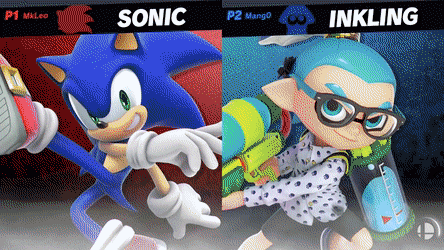

Inicio
Super Smash Bros. Ultimate, como otros videojuegos de la serie Super Smash Bros., presenta un crossover de luchadores de diferentes franquicias de Nintendo —como las series de videojuegos de Mario y Metroid— así como combatientes icónicos de propiedades de terceros, tales como Pac-Man, Cloud Strife, Solid Snake y Mega Man. Ultimate incluye a todos los personajes de los títulos anteriores de Super Smash Bros., incluidos los ofrecidos a través de contenido descargable en Super Smash Bros. para Nintendo 3DS y Wii U. Además, se introdujo el concepto de los "Echo Fighters", personajes que anteriormente se basaban en un luchador y solo cambiaban su apariencia estética y algunos cambios menores en sus estadísticas o conjuntos de movimiento. Estos personajes son tratados como personajes únicos dentro de la lista de luchadores de Ultimate. Por ejemplo, la princesa Daisy de la franquicia de Mario es un Echo Fighter individual en Ultimate (anteriormente solo era representada como un cambio en la paleta de colores de la princesa Peach).
Ultimate está siendo desarrollado por Bandai Namco Games y Sora Ltd., el mismo equipo que desarrolló "Super Smash Bros. para Nintendo 3DS y Wii U", con Masahiro Sakurai como director. El objetivo de Sakurai para Ultimate era incluir a todos los personajes de juegos anteriores, sabiendo que esto sería un problema complejo tanto para el desarrollo como para la licencia. También quería tratar de ajustar las habilidades de los personajes para acelerar el juego. Sakurai sabía que Ultimate era un título básico para Nintendo, y que tenía una base de jugadores dedicada que no quería defraudar, y creía que necesitaba completar estos objetivos para satisfacer a ambos grupos de jugadores, tanto jugadores competitivos veteranos, como jugadores en el que "Ultimate" sería su entrega introductoria, también sin dejar atrás a jugadores casuales, que buscan solamente diversión.